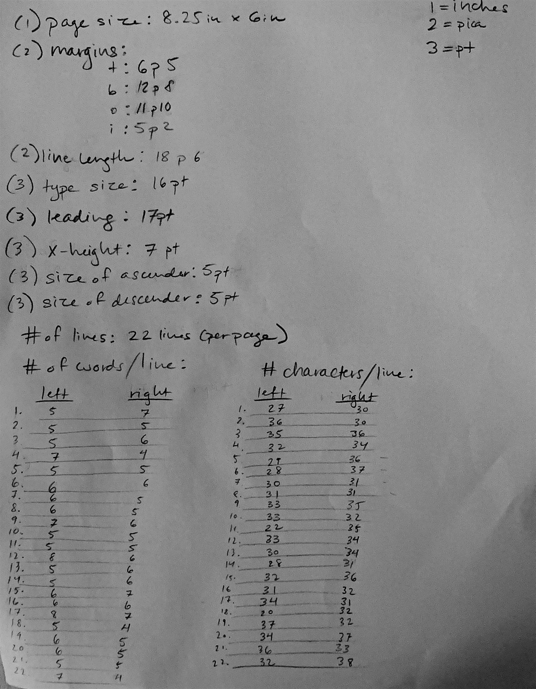
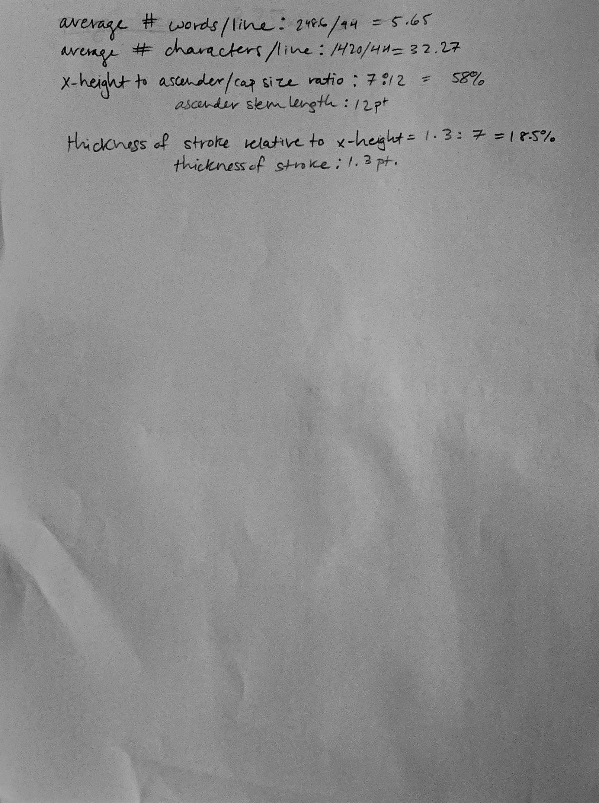
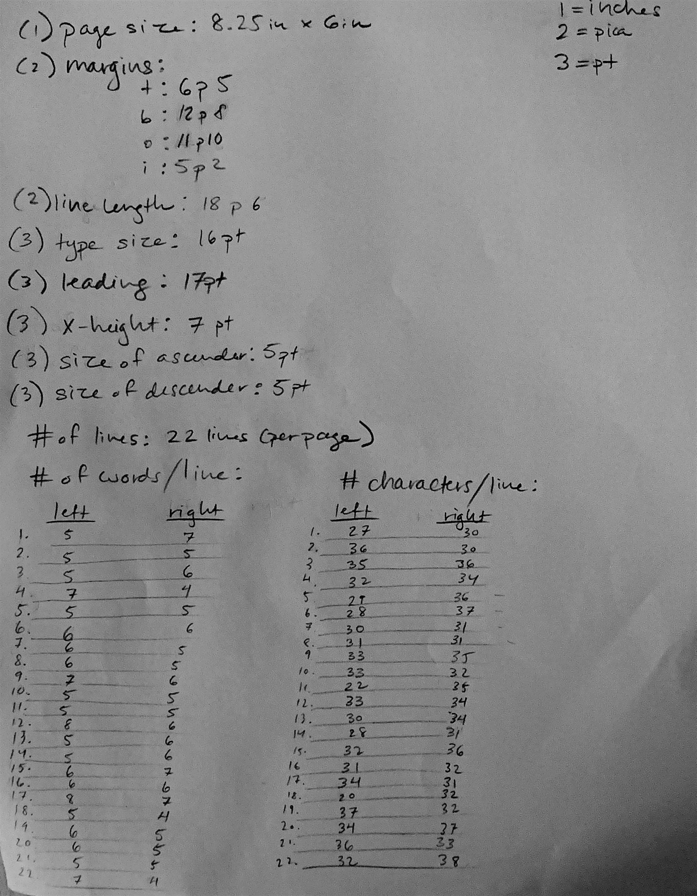
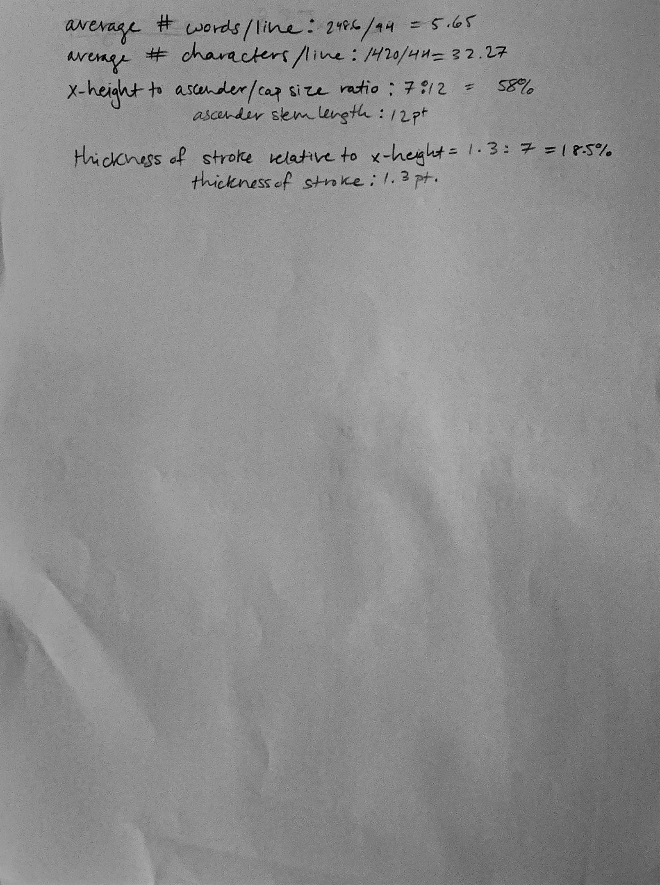

Letterform: Study of Pietro Bembo's
De Aetna
 



Letterform: Study of Pietro Bembo's De Aetna, 17" x 11"
For this project, I measured types and text frames in an early printed book, and illustrated the metrics behind the words arranged in a specific page architecture. For our study, we used spread page from Pietro Bembo's De Aetna, printed by Aldus Manutius in Venice in 1496. The end result is a 17" x 11" (landscape) research poster, highlighting various metrics and typeface specifications.